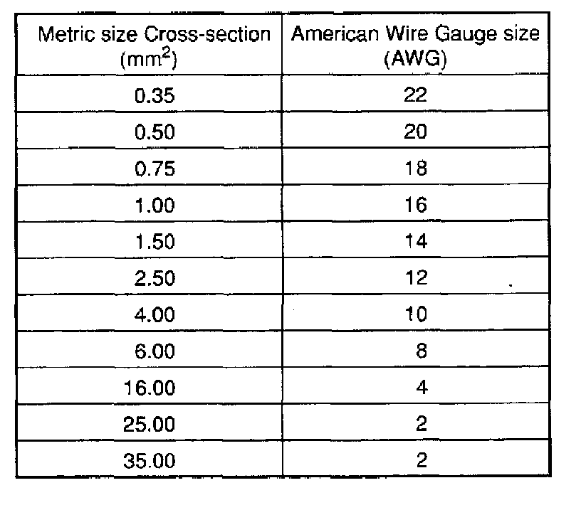

Wire Size Conversion
Wire Size Conversion Chart
Wiring Diagrams identify wires by the metric wire size. Metric wire sizes indicate cross-sectional area in square millimeter (mm sq.). The chart below lists metric wire sizes and their equivalents in American Wire Gauge (AWG) sizes.
